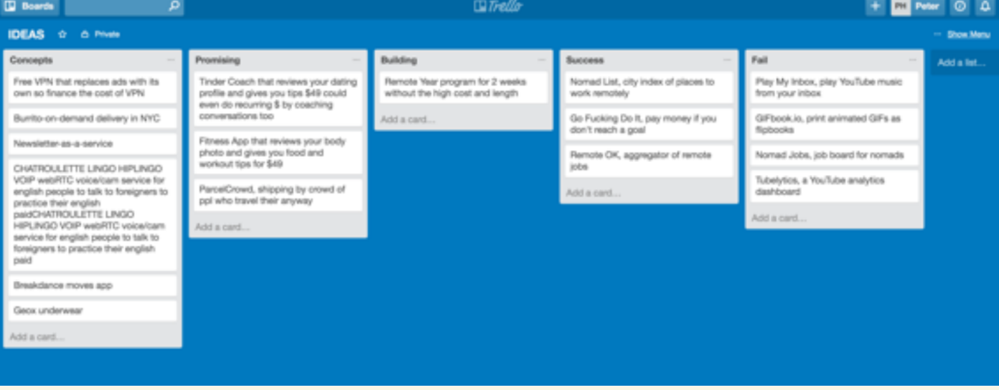

创建想法清单并持续追踪
如果你在寻找想法，一个好的开始是记录下你产生的任何想法。你如何记录你的想法取决于你自己。我现在用 Workflowy，以前用 Trello。我有几个不同的列表。第一个是"概念"，那是粗略的想法。然后，如果某个想法看起来不错，我就把它移到"有潜力"列表。如果我真正开始执行它们，就把它们放进"建设中"列表。完成后，我有一个"成功"或"失败"列表。当它失败时，我通常会在卡片里用一句话写个事后分析，说明失败的原因。

第一个基础想法的清单对想法可以有多奇怪或多疯狂没有任何限制。这是故意为之。对于你的第一个基础创意前提不应该有任何评判。它以后可以演变成更实用的东西。
关于想法，至少对我来说，它们会不断地在我的脑海里浮现。我会得到一个基本的预感，几周后它又回来了，然后几个月后它开始在我脑海里显现。有时甚至在两年后我终于开始执行它。这很好，因为你的大脑就像一个想法的电饭煲。它们需要准备好，然后你才能拿出来构建。
这个想法清单不一定是实体的或虚拟的，如果对你有用，甚至它也可以只存在于你的脑海里。只要你不断回顾这些想法，看看它们是否已经发展到值得实际执行。
应该独自构思想法还是与团队一起？
我认为协作可能非常危险。因为如果你在团队中与他人合作，很容易出现“群体思维”的倾向，即每个人都开始互相鼓吹这个想法有多大价值。原型可能只得到了付费用户的微弱认可，但因为你在这个团队中工作，并且已经对它疯狂着迷，以至于用户支付了多少、做了什么或说了什么都变得不再重要。这非常糟糕。一切应该只以用户为中心
我曾处在那些场合中，亲眼目睹过它的发生。“Joe，我告诉你，我们手头有个非常棒的项目。”不，我们不在乎。一切应该只关乎客户。你会看到很多初创公司走入歧途，因为他们在早期就陷入了这种群体思维，而这实际上并非理性的思考。你一个人时会更理性。显然，协作在生成创意方面也能起作用，但我认为生成创意最核心的部分是自己产生想法，然后与人们、客户、用户交流来演化这些想法。而不是和你的队友探讨你们团队的想法有多伟大。
最糟糕的就是和那些只会认同你既有想法的人待在一起。最好的做法是尽可能快地测试你的想法。甚至向别人征求建议某种程度上也是扯淡。你不能问“这个想法行得通吗”。你需要通过把它做出来去询问市场！在发布之前，没人会知道结果！
不要害怕分享你的想法
人们仍然犯的最基本的错误是不分享他们的想法。不，如果人们喜欢你的想法，他们不会偷走它。即使他们偷了，他们也可能执行得没你好。即使他们执行得好，你也不是什么稀世珍宝！有成千上万甚至数百万的人和你有同样的想法。别再以为你有多特别了！想法多得不值钱。一切都关乎你如何执行。
想法 × 执行力 = 生意
- 坏想法 = 0
- 好想法 = 10
- 绝妙想法 = 20
- 零执行力 = $0
- 良好执行力 = $100,000
- 卓越执行力 = $1,000,000
"对我来说，想法本身毫无价值，除非被执行。它们只是一个乘数。执行力价值数百万。 要创造一门生意，你需要将两者相乘。 绝妙的想法，没有执行力，价值 $20。 绝妙想法需要卓越的执行力才能价值 $20,000,000。"
— Derek Sivers 在他著名的文章《想法只是执行力的乘数》（2005）中写道
你不应该害怕分享你的想法，因为执行力赋予想法细节和具体性。这意味着10个有相同想法的人会以10种完全不同的方式执行它。
能够分享你的想法的好处是你会与所有人讨论它们。潜在客户、供应商、无论谁。每个人都会提出一些意见，你可以选择采纳与否作为反馈。再次强调，市场仍然是最重要的反馈。 不分享你的想法是愚蠢的，因为它只会停留在你的脑海里。你肯定不会客观地判断它，因为你有一种叫做"乐观偏见"的东西，即"个人低估他们经历不利事件可能性的倾向"，例如你认为它肯定会非常成功。 人们说"那个想法永远行不通"并不重要，因为他们不是验证标准。用户付费/使用它才是验证，而不是别人评判你的想法！因此，分享你的想法的重点不在于让人们喜欢或讨厌它。重点在于让你的大脑在其舒适区（自言自语）之外工作，从而发展你的想法。通过讨论，你会想出想法的改进版，或者全新的想法。
结论
要获得想法，试着在日常生活中发现问题。你对你自己遇到的问题是最专业的，比任何没有这些问题的人都要专业。如果你总是想出和别人一样的想法：试着通过积极体验不同的事物来让自己成为一个更独特的人。不要回避禁忌和边缘想法，那只是意味着你领先于潮流，它们可能成为下一个大事件。不要想得太大，先从小处着想，然后一步一个脚印，你会通过从小处着手而做大。为避免群体思维和戏剧性事件：独自工作，尤其是在早期。自由分享你的想法以获得他人的反馈。记录你的每一个想法，过滤它们，看看哪些可以执行。
你的作业
在接下来的7天里，列出你日常生活中遇到的问题，它们可以是大是小，试着每天找到3个想法，这样在本周末你至少有21个想法。